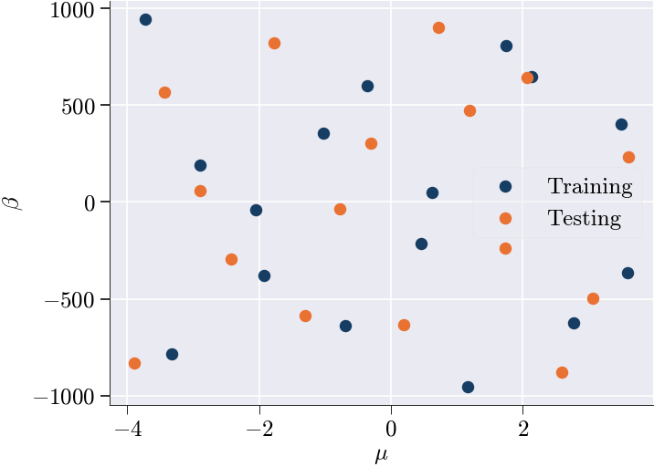
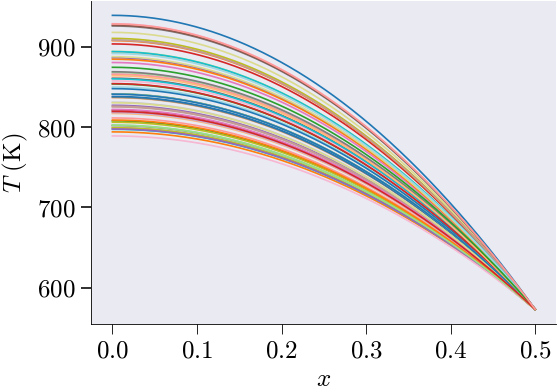
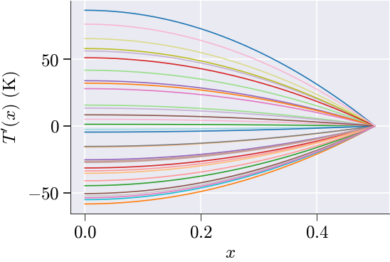
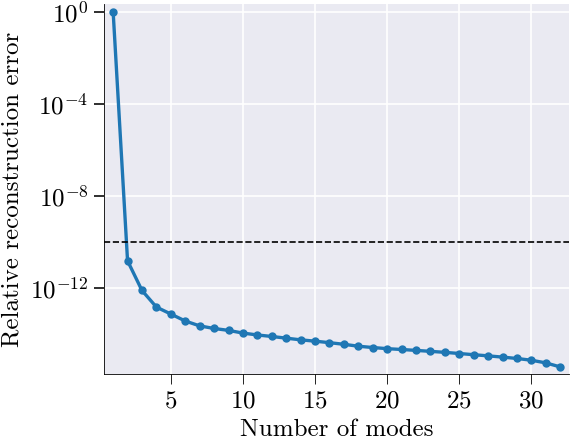
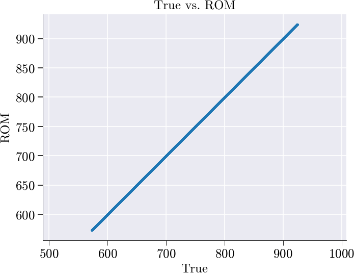
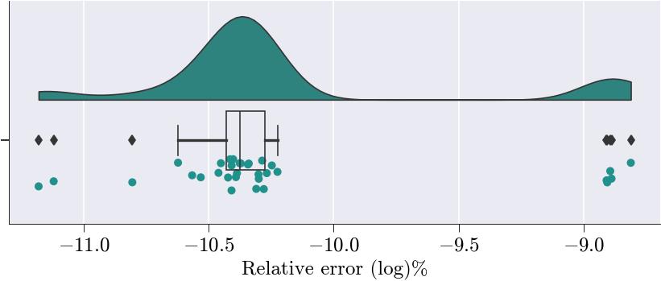
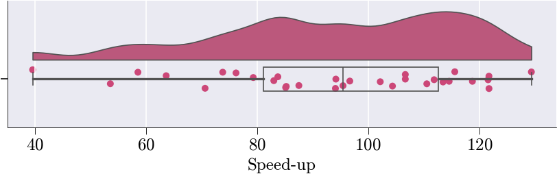

Welcome to skrom
What is Reduced-Order Modeling?
Reduced-order modeling (ROM) is a computational technique that creates fast approximations of high-fidelity numerical models. Instead of solving large systems of equations with millions of degrees of freedom, ROM constructs a low-dimensional representation that captures the essential physics while being orders of magnitude faster to evaluate.
The key insight is that many physical systems exhibit low-dimensional behavior even when discretized on fine meshes. By identifying the dominant modes of the system’s response through techniques like Proper Orthogonal Decomposition (POD), we can build efficient surrogate models that maintain high accuracy.
Offline-Online Paradigm
scikit-rom implements the classical offline-online decomposition:
- Offline Phase (computationally expensive, done once):
- Generate parameter samples
- Solve full-order problems (snapshots)
- Compute POD basis via SVD
- Assemble reduced operators
- Online Phase (fast, many evaluations):
- Rapid parameter evaluation using pre-computed operators
- Typically 10-500x faster than full-order models
One-Dimensional Steady-State Heat Conduction: Finite Element and Reduced-Order Modeling
We consider the boundary value problem
\[ - \frac{d}{dx}\left(k\,\frac{dT}{dx}\right) = q, \quad x \in [0, L], \]
subject to the boundary conditions:
- Neumann: \(\left. \dfrac{dT}{dx} \right|_{x=0} = 0\),
- Dirichlet: \(T(L) = T_L\),
where the material parameters are defined as:
\[ k = 16 + \mu, \qquad q = 35000 + \beta, \]
with \(\mu\) and \(\beta\) denoting input parameters.
Weak Formulation
Multiplying the governing equation by a test function \(v \in V\) that vanishes at \(x = L\), and integrating over the domain yields the weak form:
\[ \int_0^L k \frac{dT}{dx} \frac{dv}{dx} \, dx = \int_0^L q\,v(x)\, dx. \]
Finite Element Discretization
Discretize the interval \([0, L]\) into \(N\) uniform linear elements of length \(h = L / N\). Approximate the solution as:
\[ T_h(x) = \sum_{j=1}^{n} T_j \phi_j(x), \]
where \(\phi_j(x)\) are piecewise linear basis functions, and \(T_j\) are the nodal temperatures. Choosing \(v = \phi_i(x)\) leads to the discrete form:
\[ \sum_{j=1}^{n} T_j \int_0^L k \frac{d\phi_j}{dx} \frac{d\phi_i}{dx} \, dx = \int_0^L q\, \phi_i(x) \, dx. \]
The global system can be written as:
\[ \mathbf{K} \mathbf{T} = \mathbf{F}, \]
with
- \(K_{ij} = \int_0^L k, \dfrac{d\phi_j}{dx} \dfrac{d\phi_i}{dx} , dx\) (stiffness matrix),
- \(F_i = \int_0^L q, \phi_i(x) , dx\) (load vector),
- \(\mathbf{T} = [T_1, \dots, T_n]^\top\) (nodal temperatures).
On each element, the local contributions are:
Stiffness matrix:
\[ \mathbf{K}^{(e)} = \frac{k}{h} \begin{bmatrix} 1 & -1 \\ -1 & 1 \end{bmatrix}, \]
Load vector:
\[ \mathbf{F}^{(e)} = \frac{q h}{2} \begin{bmatrix} 1 \\ 1 \end{bmatrix}. \]
The Neumann condition at \(x = 0\) is naturally satisfied. The Dirichlet condition \(T(L) = T_L\) is imposed directly on the final equation.
Analytical Reference Solution
For constant \(k\) and \(q\), the exact solution is:
\[ T(x) = T_L + \frac{q}{2k}(L^2 - x^2), \]
which provides a useful reference for numerical verification.
Motivation for Reduced-Order Modeling
When evaluating \(\mathbf{T}\) for multiple parameter pairs \((\mu, \beta)\), solving the full system \(\mathbf{K} \mathbf{T} = \mathbf{F}\) repeatedly becomes computationally expensive. This challenge arises in applications such as parameter studies, optimization loops, or real-time simulation.
Reduced-order modeling (ROM) mitigates this cost by projecting the full system onto a lower-dimensional subspace, enabling rapid evaluation with minimal accuracy loss. The approach involves:
- An offline phase where representative solutions (“snapshots”) are collected and used to construct a low-dimensional basis,
- An online phase where the system is solved in the reduced space, avoiding expensive computations at full resolution.
In problems with affine parameter dependence, the ROM can be formulated such that no linear solves are required in the online stage, making it suitable for many-query scenarios.
Affine Reduced-Order Modeling (ROM)
We approximate the full-order solution using a reduced affine expansion:
\[ \mathbf{T} \approx \mathbf{T}_{\text{mean}} + \mathbf{U} \mathbf{a}, \]
where:
- \(\mathbf{T}_{\text{mean}} \in \mathbb{R}^N\) is the mean of collected snapshots,
- \(\mathbf{U} \in \mathbb{R}^{N \times r}\) is the reduced basis (e.g., from POD),
- \(\mathbf{a} \in \mathbb{R}^r\) are reduced coordinates.
Substituting into the system and applying Galerkin projection:
\[ \mathbf{K} (\mathbf{T}_{\text{mean}} + \mathbf{U} \mathbf{a}) = \mathbf{f} \;\Rightarrow\; \mathbf{U}^\top \mathbf{K} \mathbf{U} \mathbf{a} = \mathbf{U}^\top(\mathbf{f} - \mathbf{K} \mathbf{T}_{\text{mean}}). \]
Define:
- Reduced stiffness: \(\mathbf{K}_r = \mathbf{U}^\top \mathbf{K} \mathbf{U}\),
- Reduced source: \(\mathbf{b} = \mathbf{U}^\top \mathbf{f}\),
- Projected offset: \(\mathbf{g} = \mathbf{U}^\top \mathbf{K} \mathbf{T}_{\text{mean}}\).
Then:
\[ \mathbf{a} = \mathbf{K}_r^{-1}(\mathbf{b} - \mathbf{g}), \qquad \hat{\mathbf{T}} = \mathbf{T}_{\text{mean}} + \mathbf{U} \mathbf{a}. \]
Efficient Online Evaluation for Affine Parametric Systems
Assume the system admits the following affine form:
\[ \mathbf{K}(\mu) = \mu\, \mathbf{K}_1, \quad \mathbf{f}(\beta) = \beta\, \mathbf{f}_1. \]
Then, in the offline phase, precompute:
In the online phase, for any \((\mu, \beta)\):
\[ \boxed{ \hat{\mathbf{T}}(\mu, \beta) = \mathbf{T}_{\text{mean}} + \mathbf{U} \left( \frac{\beta}{\mu} \mathbf{a}_1 - \mathbf{c}_1 \right) } \]
This avoids matrix assembly and linear solves during inference, resulting in fast and scalable evaluation. Below we build a reduced order model in skrom to quickly calculate the temperature profiles for different parameter values (\(\mu, \beta\)).
# ─────────────────────────────────────────────────────────────────────────────
# Imports & Setup
# ─────────────────────────────────────────────────────────────────────────────
from pathlib import Path
notebook_path = Path().resolve()
from src.skrom.utils.imports import *
from src.skrom.rom.rom_utils import *
from src.skrom.rom.rom_error_est import *
from src.skrom.utils.visualization.color_palette import set_color_palette
from src.skrom.utils.reduced_basis.svd import svd_mode_selector
from src.skrom.rom.bilinear_form_rom import BilinearFormROM
from src.skrom.rom.linear_form_rom import LinearFormROM
from skfem.helpers import grad, dot
import numpy as np
import matplotlib.pyplot as plt
from scipy.stats import qmc # for Sobol
import time
set_color_palette()
# ─────────────────────────────────────────────────────────────────────────────
# Mesh & BC
# ─────────────────────────────────────────────────────────────────────────────
nx, x_end = 2**17, 0.5
mesh = MeshLine(np.linspace(0, x_end, nx+1))
basis = Basis(mesh, ElementLineP1())
bc_val = 573.15
D = np.where(np.isclose(basis.doflocs[0], x_end))[0]
# ─────────────────────────────────────────────────────────────────────────────
# Material & Source
# ─────────────────────────────────────────────────────────────────────────────
def conductivity(mu: float=0) -> float:
"""$k(μ)=16+μ$."""
return 16 + mu
def heat_source(beta: float=0) -> float:
"""$Q(β)=35000+β$."""
return 35000 + beta
# ─────────────────────────────────────────────────────────────────────────────
# Forms & Assembly
# ─────────────────────────────────────────────────────────────────────────────
@LinearForm
def l(v,p):
"""$l(v;p)=∫Q(β)\,v\,dx$."""
return heat_source(p['beta'])*v
@BilinearForm
def a(u,v,p):
"""$a(u,v;p)=∫k(μ)\,\nabla u·\nabla v\,dx$."""
return conductivity(p['mu'])*dot(grad(u),grad(v))
def assemble_system(p):
"""Return stiffness, load for params p."""
return asm(a,basis,mu=p[0]), asm(l,basis,beta=p[1])
# ─────────────────────────────────────────────────────────────────────────────
# Sobol Sampling
# ─────────────────────────────────────────────────────────────────────────────
def generate_sobol(d,n,bounds):
"""Sobol in $[ℓ_i,u_i]$, n=2^m."""
sampler = qmc.Sobol(d)
S = sampler.random_base2(m=int(np.log2(n)))
X = np.empty_like(S)
for i,(ℓ,u) in enumerate(bounds):
X[:,i] = ℓ + S[:,i]*(u-ℓ)
return X
# ─────────────────────────────────────────────────────────────────────────────
# Data Generation & Split
# ─────────────────────────────────────────────────────────────────────────────
param_ranges = [(-4,4),(-1000,1000)]
N_snap = 32
P_train = generate_sobol(2,N_snap,param_ranges)
P_test = generate_sobol(2,N_snap,param_ranges)
P = np.vstack((P_train,P_test))
mask = np.zeros(2*N_snap,bool); mask[:N_snap]=True
train_mask,test_mask = mask,~mask
# ─────────────────────────────────────────────────────────────────────────────
# Full-Order Solve (Affine)
# ─────────────────────────────────────────────────────────────────────────────
M0,b0 = assemble_system([-15,-34999]) # k=1,Q=1
fos_sols, fos_times = [], []
for μ,β in P:
t0 = time.perf_counter()
A = conductivity(μ)*M0
f = heat_source(β)*b0
u = basis.zeros(); u[D]=bc_val
sol = solve(*condense(A,f,x=u,D=D))
fos_times.append(time.perf_counter()-t0)
fos_sols.append(sol.copy())
LS = np.array(fos_sols)
# ─────────────────────────────────────────────────────────────────────────────
# Training/Test Solutions & Centering
# ─────────────────────────────────────────────────────────────────────────────
LS_train, LS_test = LS[train_mask], LS[test_mask]
mean_train = LS_train.mean(0)
MS = LS_train - mean_train
# ─────────────────────────────────────────────────────────────────────────────
# POD Mode Selection
# ─────────────────────────────────────────────────────────────────────────────
n_sel, U = svd_mode_selector(MS, tolerance=1e-10, modes=True)
V = U[:,:n_sel]Number of modes selected: 2 
POD Modes:

# ─────────────────────────────────────────────────────────────────────────────
# ROM Form Construction
# ─────────────────────────────────────────────────────────────────────────────
free = np.setdiff1d(np.arange(basis.N),D)
Br = BilinearFormROM(a,basis,V,V,free_dofs=free,mean=mean_train)
Lr = LinearFormROM(l,basis,V,free_dofs=free,mean=mean_train)
# ─────────────────────────────────────────────────────────────────────────────
# Offline ROM Affine Assembly
# ─────────────────────────────────────────────────────────────────────────────
Mr0 = Br.assemble(basis,mu=-15)
br0 = Lr.assemble(beta=-34999)
mean_red = V.T@(M0@mean_train)
# ─────────────────────────────────────────────────────────────────────────────
# Online ROM Solve & Metrics
# ─────────────────────────────────────────────────────────────────────────────
speed, error, LS_rom = [], [], []
fos_test_time = np.array(fos_times)[test_mask]
i = 0
for (μ,β),fos_time in zip(P_test,fos_test_time):
t0 = time.perf_counter()
Mr = conductivity(μ)*Mr0
br = heat_source(β)*br0 - conductivity(μ)*mean_red
ur = np.linalg.solve(Mr,br)
uR = reconstruct_solution(ur,V,mean_train)
dt = time.perf_counter()-t0
speed.append(fos_time/dt)
error.append(100*np.linalg.norm(LS_test[i]-uR)/np.linalg.norm(LS_test[i])+1e-15)
LS_rom.append(uR.copy())
i = i + 1
LS_rom = np.array(LS_rom)
# ─────────────────────────────────────────────────────────────────────────────
# Error Analysis & Reporting
# ─────────────────────────────────────────────────────────────────────────────
matrix = compute_rom_error_metrics_flat(LS_test,LS_rom)
generate_rom_error_report(matrix)
# plot_rom_error_diagnostics_flat(
# LS_test,LS_rom,error,speed,
# sim_axis=['True','ROM'],metrics=matrix
# )
LS_rom = np.asarray(LS_rom)
# Assign the list of speed‐up ratios (FOM time / ROM time) to a variable:
# speed_up[i] = t_fos_test[i] / t_rom[i]
ROM_speed_up = speed
# Optional: drop the first entry if it's skewed by startup overhead
# (e.g., JIT, memory allocation). Now ROM_speed_up.shape == (N_test - 1,).
ROM_speed_up = ROM_speed_up[1:]
# Assign the list of relative errors (in %) for each test sample:
# ROM_relative_error[i]
# = 100 · ‖u_fos – u_rom‖₂ / ‖u_fos‖₂
ROM_relative_error = error
plot_rom_error_diagnostics_flat(
LS_test, # full‐order solution snapshots u_fos^(i)
LS_rom, # hyper‐ROM solution snapshots u_rom^(i)
ROM_relative_error, # list [e_1, …, e_N]
ROM_speed_up, # list [s_1, …, s_N]
sim_axis=['True','ROM'], # axis labels for true vs. ROM scatter
metrics=matrix # the computed metrics matrix
)  
===================
ROM Accuracy Report
===================
Global Errors:
L2 Error: 8.2505e-06
Relative L2 Error: 5.2750e-12
L∞ Error: 2.0845e-08
Relative L∞ Error: 2.2554e-11
RMSE: 4.0286e-09
MAE: 1.6009e-09
Statistical Fit:
R² Score: 1.0000
Explained Variance: 1.0000
Error Distribution:
Median Error: -9.4133e-11
95th Percentile Error: 1.1765e-08
Time/Parameter-Dependent Errors:
Average Rel L2 Error over time/parameter: 2.3908e-12
Max Rel L2 Error over time/parameter: 1.5451e-11
Min Rel L2 Error over time/parameter: 6.5942e-14Recommended Reading
To dive deeper, check out: